Overview
Gray whales are baleen whales known for their long coastal migrations and bottom-feeding behavior. They use short, coarse baleen plates to filter small invertebrates from sediment and water. Monterey Bay is along their eastern Pacific migration route.
Gray Whale — Quick Facts
- Length
- Average 42–46 ft; maximum 49 ft
- Weight
- Average 60,000–80,000 lb; maximum 90,000 lb
- Diet
- Mainly benthic crustaceans, especially amphipods; polychaete worms and other bottom-dwelling invertebrates; occasionally baitfish, herring eggs, and zooplankton
- Predators
- Orcas
- Habitat
- North Pacific nearshore coastal waters
- Depth
- 0–200 ft (0–60 m), as described in the January 15 Naturalist update
- Range
- Eastern population: Alaska to Mexico. Western population: Russia to southern China, possibly Vietnam; migration patterns overlap and are complex.
- Lifespan
- 30–70 years; possibly up to 80 years
- Conservation
- Global species: Least Concern (IUCN); CITES Appendix I. Eastern North Pacific population: delisted under the U.S. ESA. Western North Pacific population: endangered under the U.S. ESA.
Source: January 15, 2026 Naturalist Species Highlight. Values are source-reported approximations; conservation designations and range details should be checked against current authorities. ESA = U.S. Endangered Species Act of 1973.
Identification
Mottled gray coloration, no dorsal fin, a series of knuckles along the back near the tail, and often patches of barnacles and whale lice.
Migration and feeding
Eastern North Pacific gray whales generally migrate between Arctic/subarctic feeding areas and breeding and calving lagoons around Baja California. Their migration route passes the California coast, including Monterey Bay. Many feed by suctioning sediment and filtering small crustaceans and other invertebrates.
January 2026 Gray Whale Migration
By early February, the southbound migration was slowing and some juvenile gray whales were already heading north. Fourteen cow–calf pairs were reported passing Southern California, mostly in healthy condition.
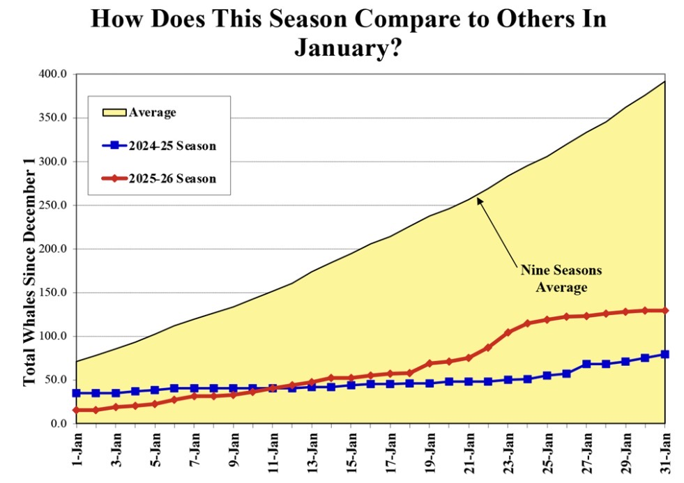
The 2025–26 season ended January at approximately 130 sightings, compared with around 80 in 2024–25 and a nine-season average near 390. Counts improved over the previous season but remained far below the historical average. These are monitoring counts, not a full population census.
Juveniles sometimes reverse direction before reaching the Baja California breeding grounds. Cow–calf pairs generally travel north later.
Gray Whale Ecology & Conservation — January 2026
For visitors: Gray whales migrate past Monterey Bay in winter. They are unusual among baleen whales because they often feed by suctioning prey from the seafloor, stirring sediment as they go. Reports of plump-looking migrants in January 2026 were encouraging, but do not by themselves prove population recovery.
Migration, reproduction and calves
Eastern North Pacific gray whales generally travel between northern feeding grounds and calving areas near Baja California. Gestation is approximately 12–13 months; calves are born large and grow rapidly on rich milk. Mothers and calves usually head north later than other adults. Breeding groups may include one female and several males.
Feeding, whale riders and ecosystem engineering
Gray whales consume amphipods and other small animals, often by rolling onto a side, suctioning sediment and filtering prey with baleen. Feeding disturbs the seafloor, creating pits and redistributing sediment. Specialized gray whale barnacles (Cryptolepas rhachianecti) and whale lice (cyamids) live on their bodies. Some individuals preferentially feed on one side, leaving asymmetric barnacle wear. Their diet can also include other crustaceans and prey in different habitats.
Population decline and unusual mortality events
NOAA designated an eastern North Pacific gray whale unusual mortality event from December 2018 through November 2023. Hundreds of strandings were documented. Poor body condition, reduced prey availability and changing Arctic ecosystems are major concerns, while vessel strikes and entanglements remain threats. The exact contributions of environmental and human pressures are still being studied; do not attribute the event to an unsupported single cause.
Population abundance estimates, calf counts and local whale-watching sightings measure different things and should not be treated as interchangeable. The Pacific Coast Feeding Group is a distinct feeding aggregation within the eastern North Pacific population.
Sources and dated Field Note
Naturalist Field Notes — January 15, 2026 (find under January 2026). NOAA gray whale profile · NOAA UME findings · Monterey Bay Aquarium.
Adapted from the January 15 Naturalist shift update; research estimates and conservation assessments may change.
Gray Whale Research Graphics — January 2026
Explore the Naturalist update's research graphics by topic. Each section opens independently, so guides can quickly find an image without scrolling through the entire collection.
Growth and life cycle (3 graphics)
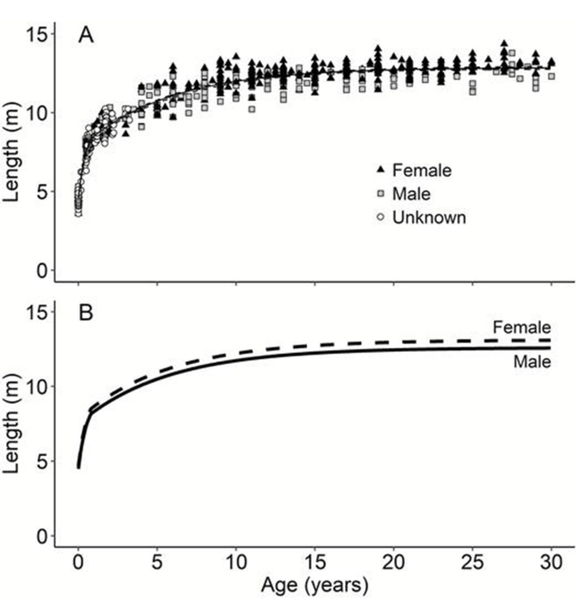
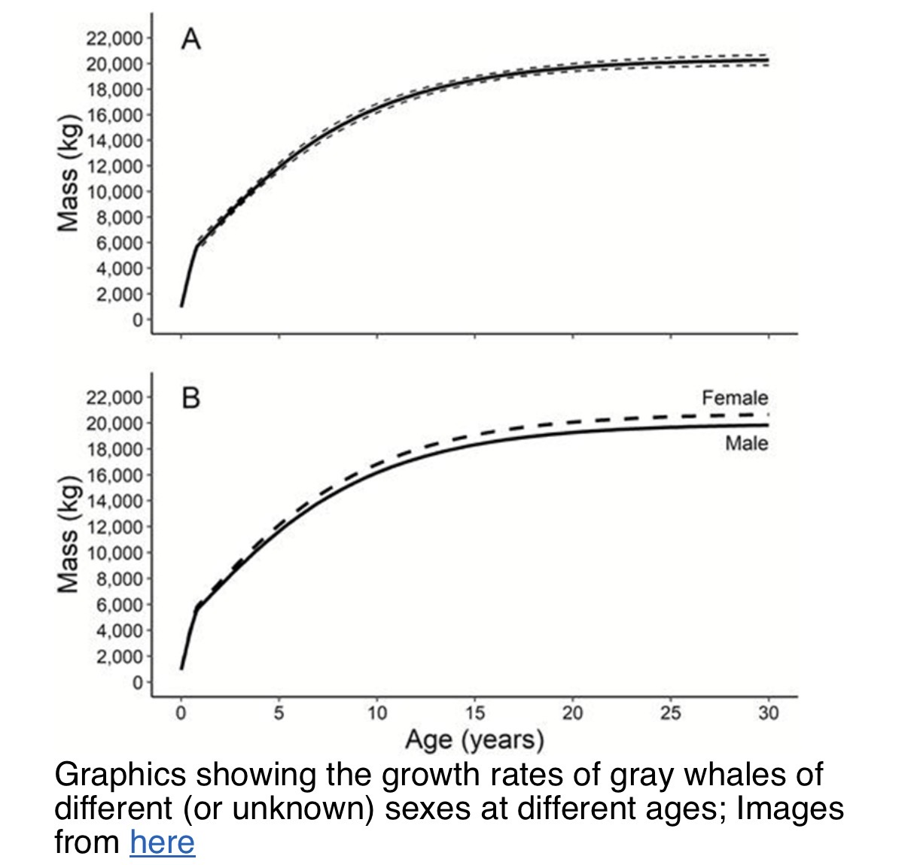
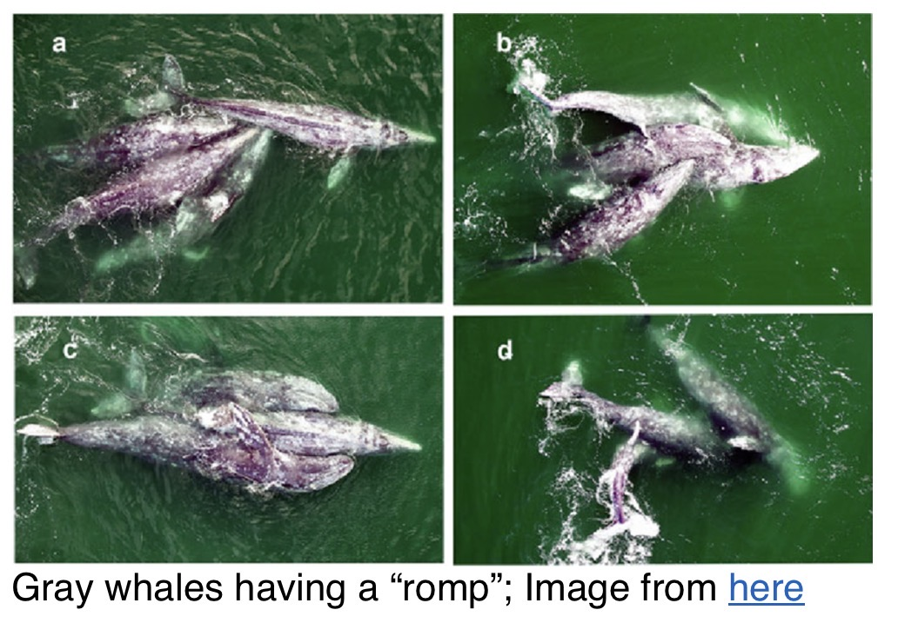
Feeding and adaptations (3 graphics)
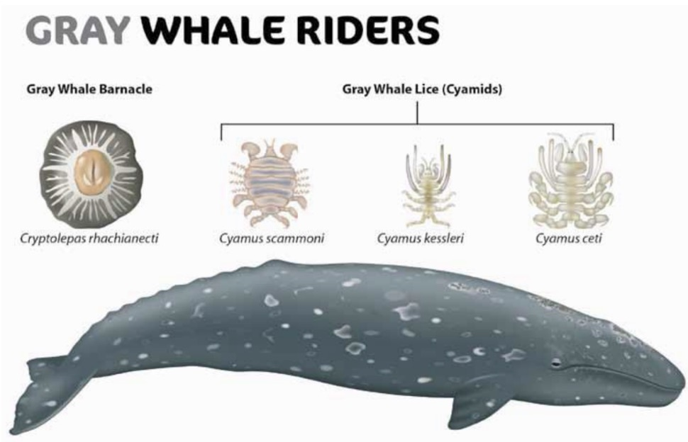
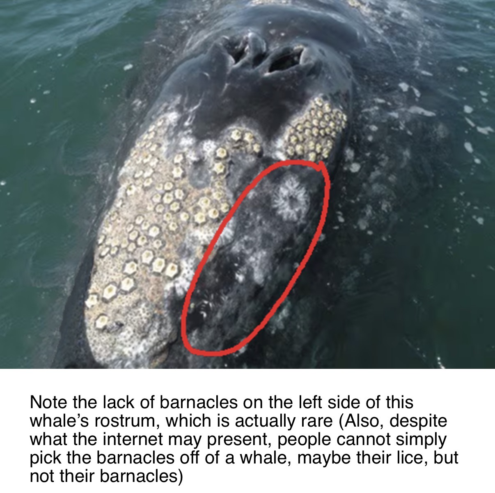
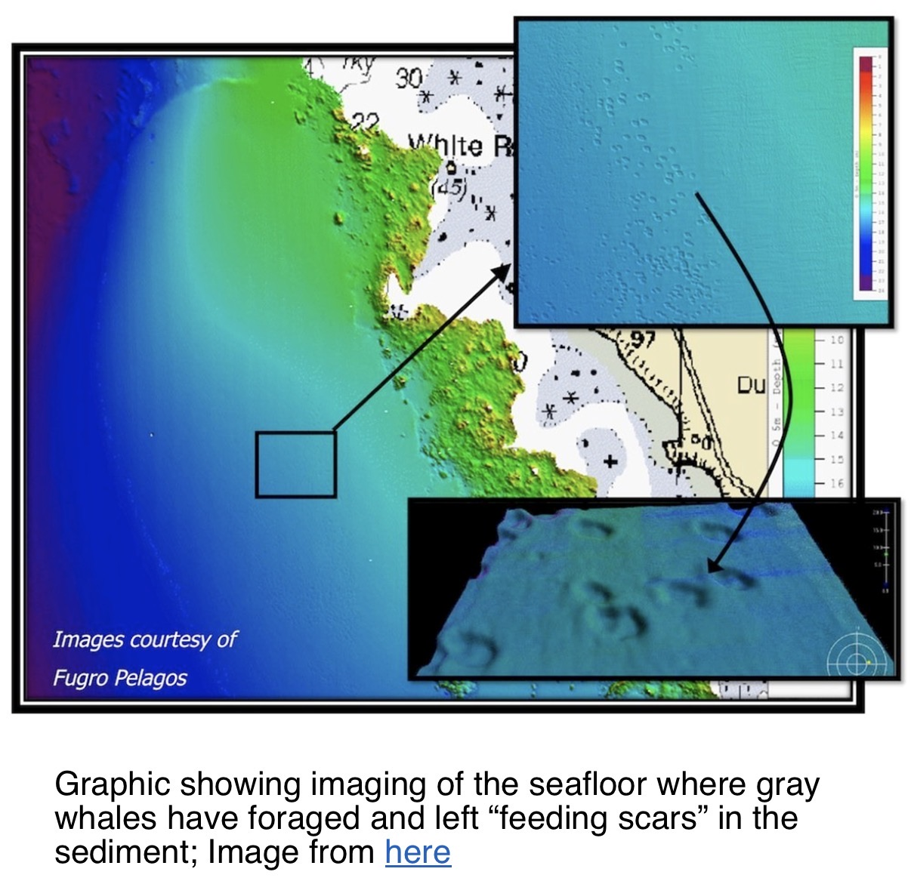
Migration and populations (2 graphics)
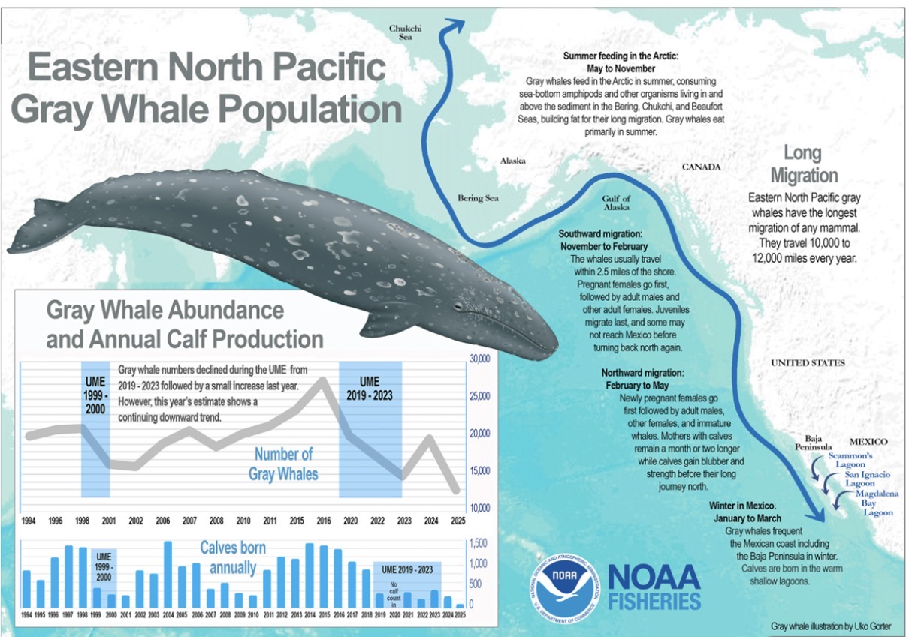
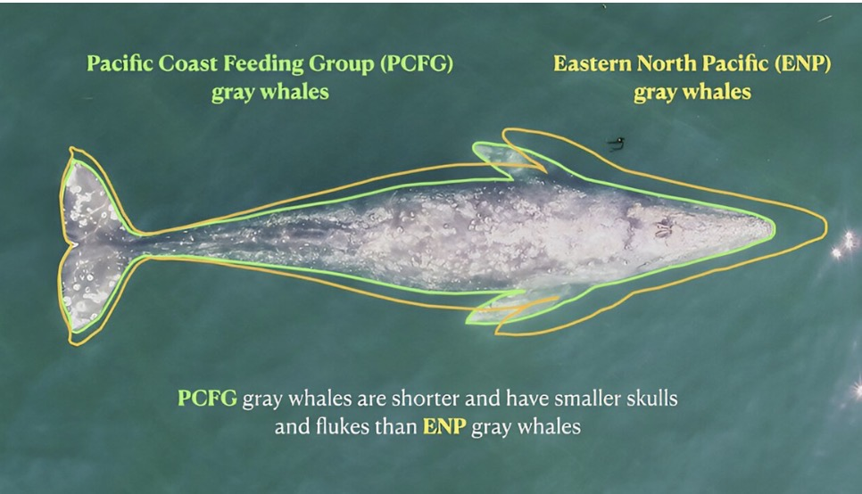
Conservation and recent trends (4 graphics)
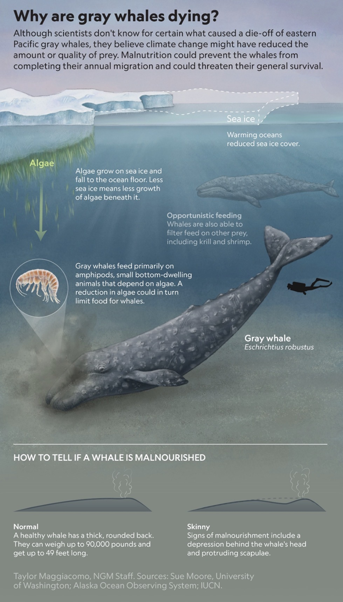
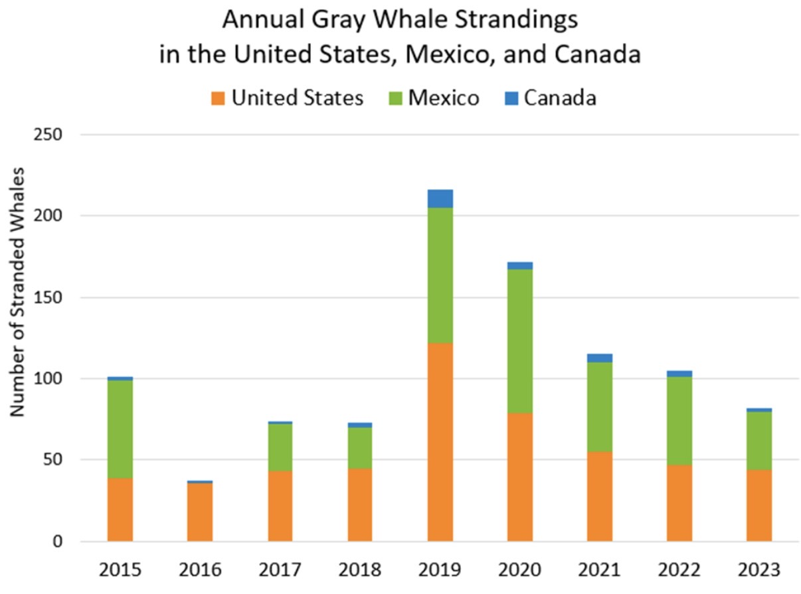
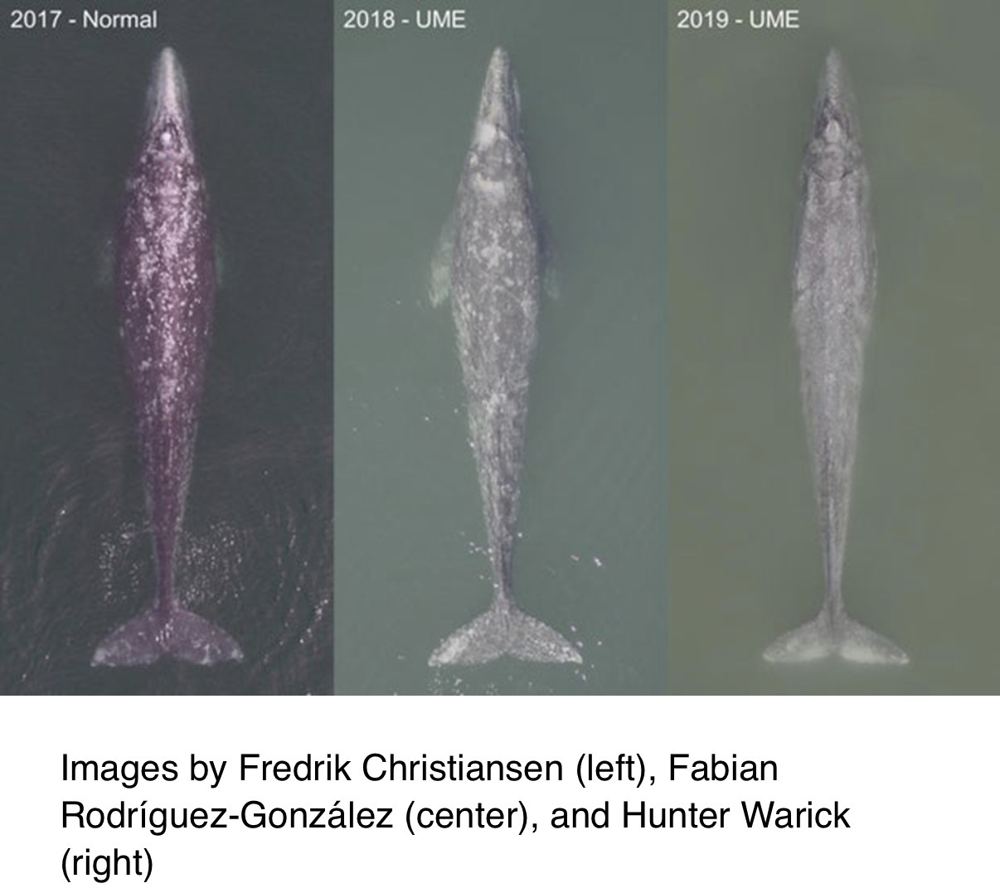
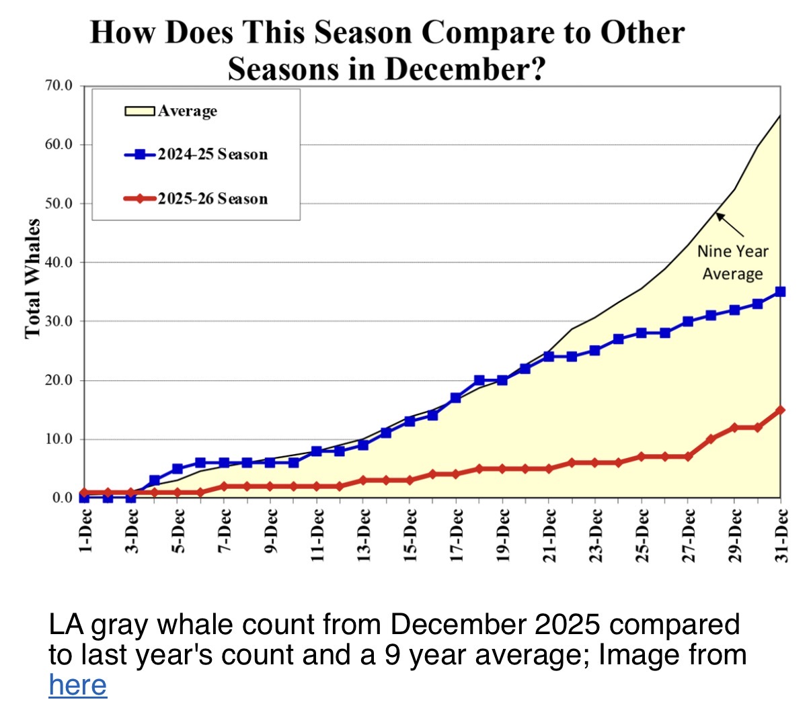
Original images and embedded attributions retained. Estimates and monitoring figures reflect their original reporting periods; verify reuse rights before redistribution.
Steve Webster's Skeleton Story

Steve Webster • MBA, Guest Experience • Video uploaded July 12, 2020
📖 Steve Webster's Story
A 26-foot-long, young-of-the-year male gray whale washed ashore near the Seaside sewage treatment plant. Steve Webster and colleagues decided to recover its skeleton. Three tow trucks were brought in to move the whale, but the team had to wait for a marine mammal permit before flensing could begin.
In the September warmth, decomposition gases built up inside the carcass. The team warned everyone to avoid cutting the body cavity, but someone miscalculated. The carcass ruptured, sending a geyser of hot, putrid blood about 20 feet into the air. People holding long flensing knives scattered. Steve compared the scene to a cheap samurai movie.
Julie Packard was present wearing a white sweatshirt; astonishingly, not a drop of blood touched it.
The bones were buried on the beach at the Naval Postgraduate School, recovered about a year later, cleaned at a car wash, and soaked in Biz enzyme detergent for approximately six months to remove oil. The bones were then stabilized with vinylite resin and reassembled with advice from Vic Morejohn of Moss Landing Marine Laboratories.
Years later, a veterinary pathologist noticed osteochondrosis dissecans in the shoulder joints. Steve suggested the condition may have interfered with the whale's migration and contributed to starvation. No obvious net damage or other trauma had been found.
❓ Visitor Questions
What whale is this? A young-of-the-year male gray whale, about 26 feet long.
Where was it found? On the beach near the Seaside sewage treatment plant.
How did the Aquarium prepare the skeleton? The team recovered and flensed the carcass, buried the bones for about a year, cleaned and degreased them, stabilized them with resin, and reassembled the skeleton.
Why did the whale die? The cause was not definitively established. Steve reported shoulder-joint disease and suggested that impaired migration and starvation were possible.
Did the whale explode? Decomposition gases built up in the body, and the carcass ruptured during flensing.
🔬 Science Behind the Story
Flensing: Removing skin, blubber, and soft tissues from a whale carcass.
Decomposition gases: Microbial breakdown can generate pressure inside a carcass, especially in warm conditions.
Bone degreasing: Whale bones retain substantial oil; prolonged cleaning reduces seepage and deterioration.
Osteochondrosis dissecans: A disorder affecting joint cartilage and underlying bone, potentially limiting joint function. Its role in this whale's death remains a historical interpretation rather than a confirmed cause of death.
📝 Full Transcript (edited for readability)
Our whale skeleton came from a 26-foot-long, young-of-the-year male gray whale that washed up dead on the beach, right by the Seaside sewage treatment plant at that time, in September. Warm, sunny day.
And Julie and our project manager and I went over and sat on the beach and watched this whale washing back and forth in the surf, and asking ourselves, “Do we really want that whale?”
And I said, “Well, I know all the students at Moss Landing Marine Lab in the marine mammal class who do dissect whales and get the skeletons out of them. Let's do it.”
So we got three tow trucks to pull the whale up out of the beach. Had to wait the next day till two in the afternoon before we could start flensing the whale, because we didn't have a marine mammal permit. In fact, it was illegal just to tow it up the beach.
We had to wait for a marine mammal person from the Cal Academy of Sciences to arrive with the permit. So that whale skeleton is on loan, really, from the Cal Academy.
Anyway, hot summer September day. As we were waiting for the permit to come, the whale got tighter and tighter and tighter as the gases built up. And so everybody agreed, “Don't anybody cut the body cavity, because this thing's going to explode.”
And so we were all working on the rostrum and the flippers and the flukes and the tail, and staying away from the body cavity. Somebody miscalculated.
And all of a sudden, boom! This geyser of hot, putrid blood goes about 20 feet in the air. Everybody with these long flensing knives goes dashing off in all directions. Looked like the worst cheap samurai movie you have ever seen.
And Julie Packard was there in a white sweatshirt. Why anyone would go to a whale flensing in a white sweatshirt, I don't know. But not one drop of blood touched that sweatshirt. I think Julie has a protective aura around her.
So, get the bones out of the whale, bury them in the beach at the Naval Postgraduate School, go back a year later and dig them up, take them to the car wash, convince the man you really want him to let us wash our whale in his car wash.
Then you soak the bones in Biz enzyme detergent for about six months. Whale bones are 30 percent oil. You have to get all that oil out, or it starts to rot and drip on your guests. And so, six months.
Then firm them up with a very toxic vinylite resin, and then get the guys in the shop to put it all back together in exactly the right arrangement with the advice of Vic Morejohn at Moss Landing Marine Lab. So that's the skeleton that you see out there.
And I have one quick story about the skeleton, and then I will let you go.
One day, about ten years ago, I got an email from a veterinary pathologist who said, “Do you know that your whale skeleton has osteochondrosis dissecans?” And I thought, I have no idea what that is, and I didn't know our whale had it.
It is a degenerative bone disease, and the skeleton has it in the shoulder joints, right below the shoulder blades there.
So I grabbed our veterinarian, Mike Murray, and walked him out there, and I said, “Mike, look at the shoulder joints. What do you see?” “Ah, osteochondrosis dissecans.”
So that explains why that whale didn't make the migration, probably starved to death and washed up dead on the beach. There had been no apparent net damage or any other trauma.
Source: “MMG - Whale Skeleton Full Story - Steve Webster,” MBA, Guest Experience (Vimeo, July 12, 2020). Transcript lightly edited for punctuation and readability. Interpretive statements about cause of death are attributed to the speaker.
Future modules
Additional gray whale anatomy, feeding, migration, reproduction, conservation and Monterey Bay sightings can be added as separate modules without changing Steve Webster's historical account.
Install and troubleshooting
On iPhone: Safari → Share → Add to Home Screen. If an update does not appear, reload while connected to the internet.